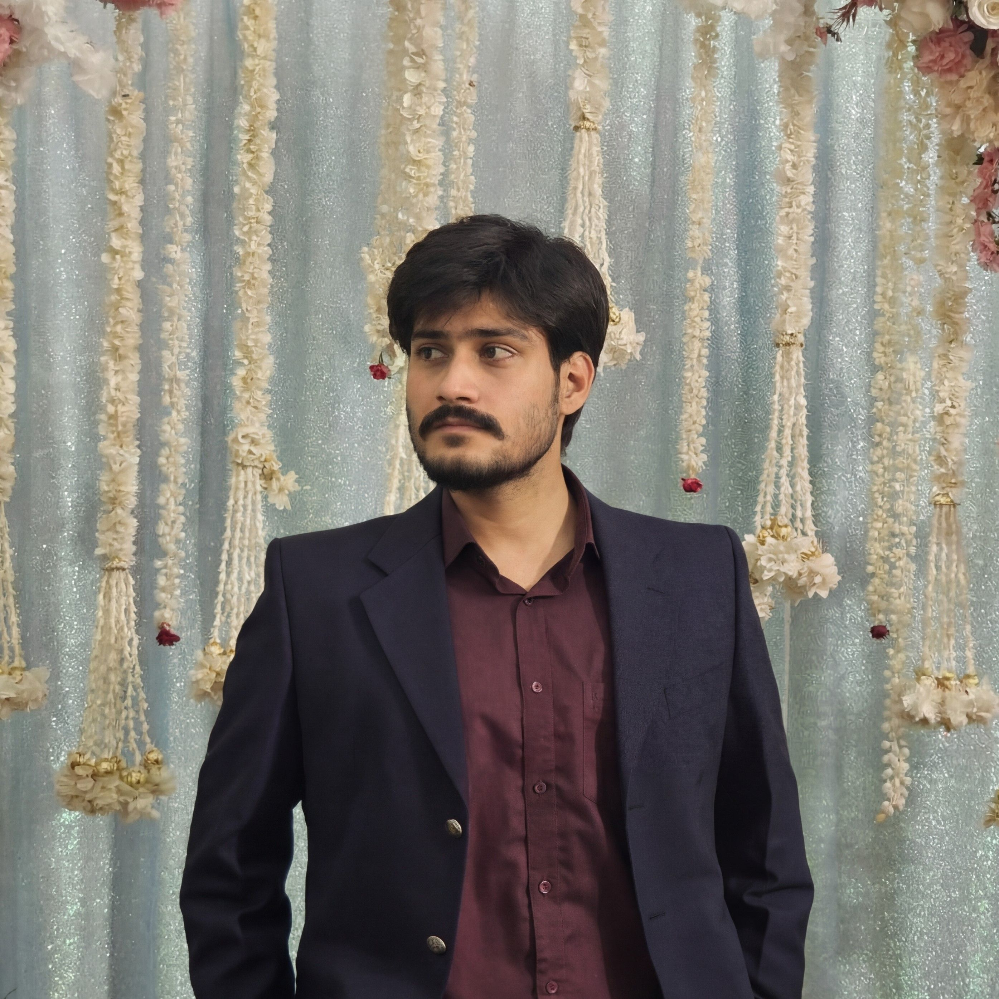

Oshan Manhas
Welcome! I am Oshan Manhas, a final-year B.Tech Computer Science student at GCET Jammu (2022–2026). My academic interests include Data Science, Machine Learning, Computer Networks, and emerging communication technologies. I enjoy building projects and strengthening my technical foundation through continuous learning.